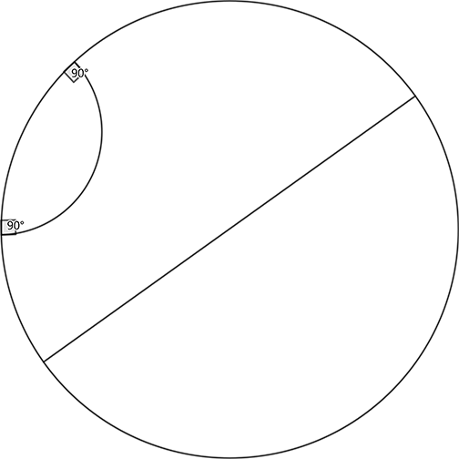

The hyperbolic plane can be represented by the open unit disc, namely the set of points $(x, y)$ in $\Bbb R^2$ with $x^2 + y^2 < 1$.
A geodesic is defined as either a diameter of the open unit disc or a circular arc contained within the disc that is orthogonal to the boundary of the disc.
The following diagram shows the hyperbolic plane with two geodesics; one is a diameter and the other is a circular arc.

Let $\mathcal V(N)$ be the set of points $(x, y)$ such that $x^2 + y^2 \lt 1$ and $x, y$ are both rational numbers with denominator not exceeding $N$.
Let $T(N)$ be the number of ordered triples $(P, Q, R)$ such that $P, Q, R$ are three different points in $\mathcal V(N)$ and there is a hyperbolic line passing through all of them.
For example, $T(2) = 24$ and $T(3) = 1296$.
Find $T(12)$.